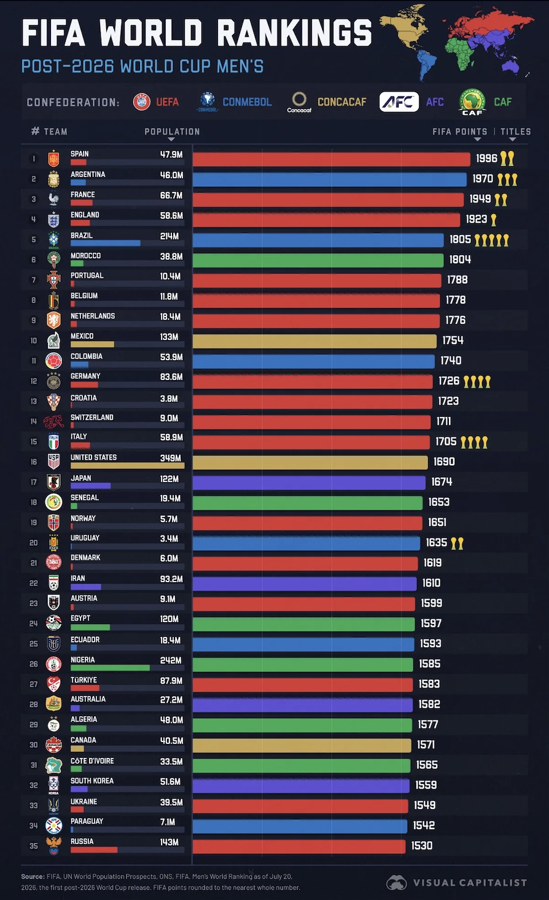

About this exercise
This exercise asked me to apply the perception concepts from Module 2 to a data visualisation that was already published, rather than one I created myself. The goal was to identify what draws a viewer's attention before any conscious analysis happens (preattentive processing), recognise how grouping principles like similarity or proximity shape the way a chart is read (Gestalt laws), and evaluate how accurately a chosen encoding, such as bar length or an icon count, allows a viewer to actually compare values (visual accuracy).
The visualisation

What grabbed my attention first
The first aspect of this chart that caught my attention was the color coding based on the confederation. The colors represent the regional federation each nation is from red is for UEFA (Europe), blue is for CONMEBOL (South America), green for CAF (Africa), purple for AFC (Asia), and yellow for CONCACAF (North/Central America and the Caribbean). Colors are preattentively perceived, hence, one can tell just from looking at the graph that most of the top ranked countries are colored red, before even trying to read any names. This is an example of the application of color as a preattentive attribute which allows people to see colors in a matter of milliseconds effortlessly and unconsciously.
A Gestalt law in action
The chart above follows the Gestalt law of similarity. Bars that have a common color are grouped together, despite the fact that they are not adjacent to one another in the ranking table. This can be seen, for example, in the case of the bars colored in blue for CONMEBOL (South America), including those for Argentina (2), Brazil (5), Colombia (11), and Uruguay (20). The use of the same color makes the viewer group them into the South American group, although there is no need to draw a line or consult the confederation column to do this.
Visual accuracy of FIFA points
I decided to look into FIFA points as the quantitative value encoded by bar length. There is nothing more accurate in terms of positioning and comparison of lengths against a consistent and aligned scale than almost any other kind of encoding and that's why it works well, it is possible to tell just from looking at the bars that the gap between those representing Spain and Argentina is slight, whereas that between Spain and Russia is huge, without reading a single number. That is contrary to how the World Cup titles are presented in the same graph through repeating trophy icons next to each bar. It is much slower and less accurate to count discrete objects rather than read a length, particularly when numbers get close it is harder to see at first glance that there are four icons of trophies representing Germany versus four representing Italy. So the graph presents high accuracy encoding for one variable and noticeably lower accuracy for another in the same picture.
References
- Cohen, G. (2026, July 21). Ranked: FIFA World rankings after the 2026 Men's World Cup [Infographic]. Visual Capitalist. https://www.visualcapitalist.com/ranked-fifa-world-rankings-after-2026-world-cup/